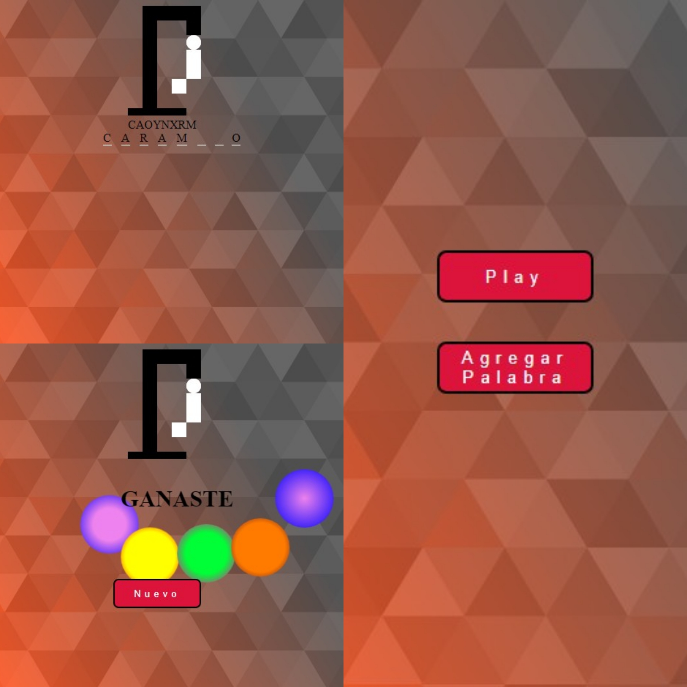
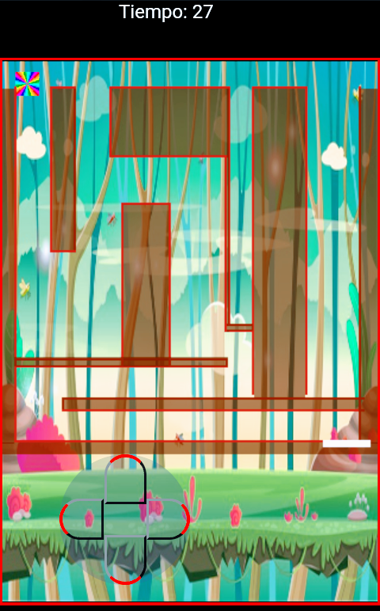

Juego de practica de ahorcado, funciona unicamente en PC por el momento
>>click para jugar >>click para descargar el codigo
juego para practicar javascripts en canvas
de html5, todo el código lo hice desde el celular, por eso es que el ancho y alto del canvas es del tamaño de un teléfono y
tiene un joystick programado para jugar en táctil, solo tiene 5 niveles sin menú ni pausa,
se trata de llevar un cuadrado a través de un laberinto hasta llegar a una supuesta puerta roja
con un tiempo limite por nivel.
>>click para jugar >>click para descargar el codigo